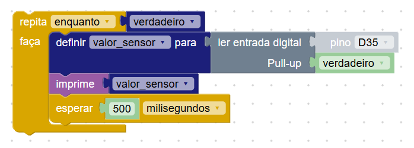
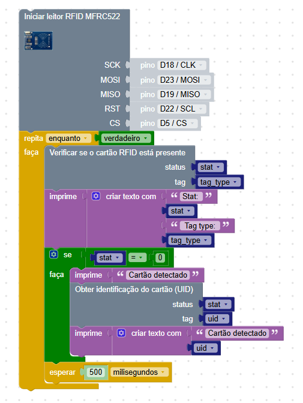
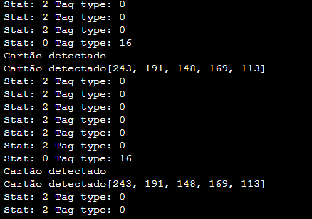

Nesta Seção
Sensores na Robótica
Sensores são componentes que permitem que os robôs e sistemas embarcados percebam o ambiente ao seu redor. Eles captam informações como temperatura, luminosidade, distância, umidade, entre outros, convertendo esses dados em sinais que podem ser processados.
Na plataforma, os blocos relacionados a sensores estão disponíveis na categoria Sensores.
Sensor Infravermelho (IR)
O sensor infravermelho (IR) é um componente digital simples e muito utilizado na robótica, especialmente em projetos como carrinhos seguidores de linha. Ele detecta a presença ou ausência de objetos com base no reflexo da luz infravermelha, retornando valores digitais: 1 quando não há reflexão e 0 quando detecta um objeto próximo.
Este sensor possui 3 pinos (VCC, GND e Sinal) e pode ser facilmente conectado à Amado Board usando os pinos de entrada digital, como D35, D39, D36 e D34. A placa já possui espaço apropriado para o encaixe direto, tornando a montagem rápida e prática.
Além de carrinhos seguidores de linha, o sensor IR pode ser usado em sistemas de contagem, barreiras de segurança, presença de objetos e outras aplicações onde a detecção simples de obstáculos é necessária.
Exemplo: leitura contínua do sensor IR
O que esse programa faz?
- Lê continuamente o valor digital do pino
D35onde o sensor IR está conectado. - Armazena esse valor na variável
valor_sensor. - Imprime o valor no console (0 ou 1), facilitando o monitoramento da leitura.
- Aguarda 500 milissegundos antes de fazer a próxima leitura.
Sensor de Temperatura e Umidade DHT11/22
O sensor DHT11/22 é utilizado para medir dois dados importantes do ambiente: temperatura e umidade relativa do ar. Ele é muito comum em projetos de automação, estações meteorológicas e controle ambiental.
Para que o sensor funcione corretamente na Amado Board, ele deve estar conectado a um pino digital. Recomendamos usar os pinos D5, D15, D16, D17, D18, D19, D21, D22 ou D23. Neste exemplo, vamos utilizar o pino D17.
Como funciona o exemplo acima?
- Inicializamos o sensor DHT11/22 e indicamos o pino de conexão.
- Entramos em um loop que repete continuamente enquanto o sistema estiver ligado.
- A cada repetição, a leitura da temperatura e da umidade é atualizada e armazenada em variáveis.
- Esses valores são exibidos no console usando o bloco
imprime. - Uma pausa de 1 segundo entre as leituras é muito importante para garantir o bom funcionamento do sensor.
Sensor de Distância Ultrassônico HCSR04
O sensor ultrassônico HCSR04 é utilizado para medir distâncias com precisão, usando ondas de som. Ele envia um sinal sonoro (trigger) e mede o tempo até que o eco (echo) retorne após bater em um objeto. Com base nesse tempo, calcula-se a distância.
Na Amado Board, já existe um espaço próprio para encaixar esse sensor diretamente nos pinos D17 (trigger) e D34 (echo), facilitando sua conexão e uso em projetos de robótica.
Como funciona o exemplo acima?
- Inicializamos o sensor especificando os pinos de trigger (D17) e echo (D34), além do tempo limite para a leitura.
- Usamos um loop contínuo para medir a distância constantemente.
- A cada repetição, armazenamos o valor da distância em uma variável.
- O valor é impresso no console para que possamos acompanhar a medição em tempo real.
- Adicionamos uma pausa de 500 milissegundos para evitar leituras muito rápidas e garantir a estabilidade do sensor.
Observação: as leituras podem sofrer oscilações, apresentando valores muito altos ou até mesmo -1. Para melhorar a confiabilidade, implemente um filtro simples que descarte leituras fora da faixa esperada.
Leitor RFID RC522
O RFID (Identificação por Rádio Frequência) é uma tecnologia usada para identificar objetos ou pessoas através de cartões ou tags que emitem sinais. É muito utilizada em sistemas de acesso, controle de presença e rastreamento de ativos.
O módulo utilizado neste exemplo é o RC522, que funciona por meio de comunicação SPI. Ele lê o UID (código único) de cartões RFID e pode também acessar a memória interna do cartão para leitura e escrita de dados.
A ligação do módulo à Amado Board deve seguir corretamente os nomes dos pinos. Alguns nomes são iguais, outros mudam entre o módulo, o bloco e a placa. Veja a correspondência recomendada:
- 3.3V → 3.3V
- GND → GND
- SCK (módulo) =
SCKno bloco =D18 / CLKna placa - MOSI =
MOSIno bloco =D23 / MOSIna placa - MISO =
MISOno bloco =D19 / MISOna placa - RST =
RSTno bloco =D22 / SCLna placa - SDA (do módulo) deve ser conectado ao
CSno bloco, recomendado usarD5como na imagem.
Embora os pinos RST e CS possam ser conectados a outros pinos digitais (como D17, D21 ou D22), recomendamos seguir o exemplo para maior compatibilidade.
Para que os blocos do leitor RFID RC522 funcionem corretamente, é necessário instalar a biblioteca mfrc522, que permite a comunicação e leitura de cartões RFID.
Após clicar no botão “Instalar biblioteca”, você pode verificar a instalação pela mensagem no console: Instalação da biblioteca mfrc522 concluída.
Também é possível confirmar a presença da biblioteca abrindo a aba Arquivos. Clique duas vezes no botão de atualizar e verifique se o arquivo mfrc522.py aparece listado na memória da placa.
Abaixo vemos um programa básico que faz a leitura de um cartão RFID e mostra os resultados no console.
Como funciona o exemplo acima?
- Inicializamos o módulo informando todos os pinos de conexão SPI.
- Entramos em um loop contínuo que verifica constantemente se um cartão está presente.
- Se um cartão for detectado (status = 0), uma mensagem será exibida no console e o UID será lido e impresso.
- Mesmo quando não há cartão, as informações de status e tipo da tag são mostradas para facilitar o debug.
- Adicionamos um delay de 500 milissegundos para evitar repetições muito rápidas.
Abaixo você pode ver como os resultados aparecem no console da plataforma, mostrando o status, tipo de tag e o UID quando um cartão é detectado.
